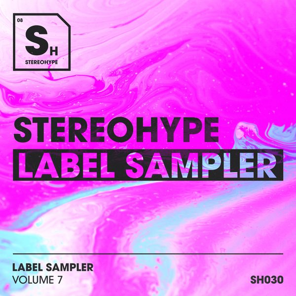

I 24 dischi
 1
AttractionFederico Scavo
1
AttractionFederico Scavo
 2
BananzaMovada
2
BananzaMovada
 3
Rock'N'RomeMilk Bar feat. Davide Ciura
3
Rock'N'RomeMilk Bar feat. Davide Ciura
 4
Back Tomorrow - GUZ RemixFerreck Dawn, Jem Cooke
4
Back Tomorrow - GUZ RemixFerreck Dawn, Jem Cooke
 5
Talking to MyselfQubiko
5
Talking to MyselfQubiko
 6
SwayLufthaus
6
SwayLufthaus
 7
Sky Turns DarkMaurice West
7
Sky Turns DarkMaurice West
 8
Human TouchArmin van Buuren & Sam Gray
8
Human TouchArmin van Buuren & Sam Gray
 9
AppleWongo
9
AppleWongo
 10
TitaniumDavid Guetta, Sia
10
TitaniumDavid Guetta, Sia
 11
Survive - Sultan + Shepard RemixLane 8, Channy Leaneagh
11
Survive - Sultan + Shepard RemixLane 8, Channy Leaneagh
 12
Feel itRetrovision
12
Feel itRetrovision
 13
Got some satisfactionLandis
13
Got some satisfactionLandis
 14
Can't beat meAndrea Lombardi,Achilles
14
Can't beat meAndrea Lombardi,Achilles
 15
All Night LongBorn Dirty
15
All Night LongBorn Dirty
 16
AbbronzatissimaVINAI & HÄWK
16
AbbronzatissimaVINAI & HÄWK
 17
TrippinOfframi & Liam Cole
17
TrippinOfframi & Liam Cole
 18
See You ThereAlok & Bhaskar
18
See You ThereAlok & Bhaskar
 19
Hate That I Like YouPalastic
19
Hate That I Like YouPalastic
 20
Ciao Ciao - Socievole & Adalwolf Bootleg RemixLa Rappresentante di Lista
20
Ciao Ciao - Socievole & Adalwolf Bootleg RemixLa Rappresentante di Lista
 21
Tear Me Down (CASSIMM Extended Club Remix)Brick Flare
21
Tear Me Down (CASSIMM Extended Club Remix)Brick Flare
 22
Pump It UpIdetto
22
Pump It UpIdetto

23 Cant Handle ItArchie B
24
Oh (All My Ladies) (Extended Mix)Tough Love
La tracklist
- 1 Attraction Federico Scavo Area 94
- 2 Bananza Movada Perfect Havoc
- 3 Rock'N'Rome Milk Bar feat. Davide Ciura Total Freedom Recordings
- 4 Back Tomorrow - GUZ Remix Ferreck Dawn, Jem Cooke Defected Records
- 5 Talking to Myself Qubiko Toolroom Records
- 6 Sway Lufthaus Armada Music
- 7 Sky Turns Dark Maurice West Armada Music
- 8 Human Touch Armin van Buuren & Sam Gray Armada Music
- 9 Apple Wongo HELDEEP Records
- 10 Titanium David Guetta, Sia Rhino
- 11 Survive - Sultan + Shepard Remix Lane 8, Channy Leaneagh This Never Happened
- 12 Feel it Retrovision Hexagon
- 13 Got some satisfaction Landis Fresh Squeeze
- 14 Can't beat me Andrea Lombardi,Achilles Hexagon
- 15 All Night Long Born Dirty Way Way Records
- 16 Abbronzatissima VINAI & HÄWK Spinnin' Records
- 17 Trippin Offrami & Liam Cole Mentalo Music
- 18 See You There Alok & Bhaskar CONTROVERSIA
- 19 Hate That I Like You Palastic Soave Records
- 20 Ciao Ciao - Socievole & Adalwolf Bootleg Remix La Rappresentante di Lista Bootleg
- 21 Tear Me Down (CASSIMM Extended Club Remix) Brick Flare FRDM
- 22 Pump It Up Idetto HMG
- 23 Cant Handle It Archie B STEREOHYPE
- 24 Oh (All My Ladies) (Extended Mix) Tough Love Get Twisted Records